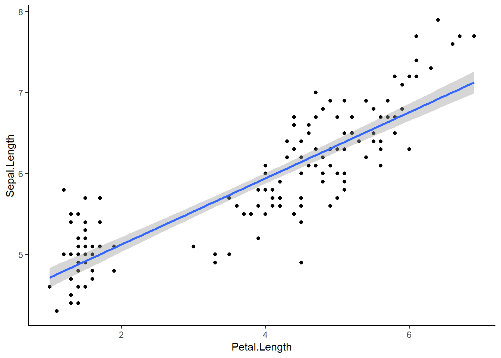
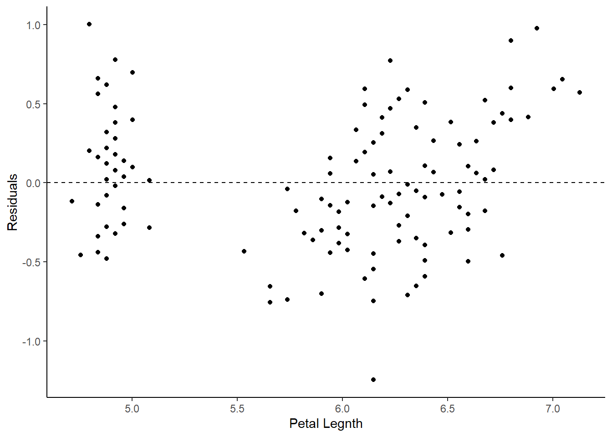
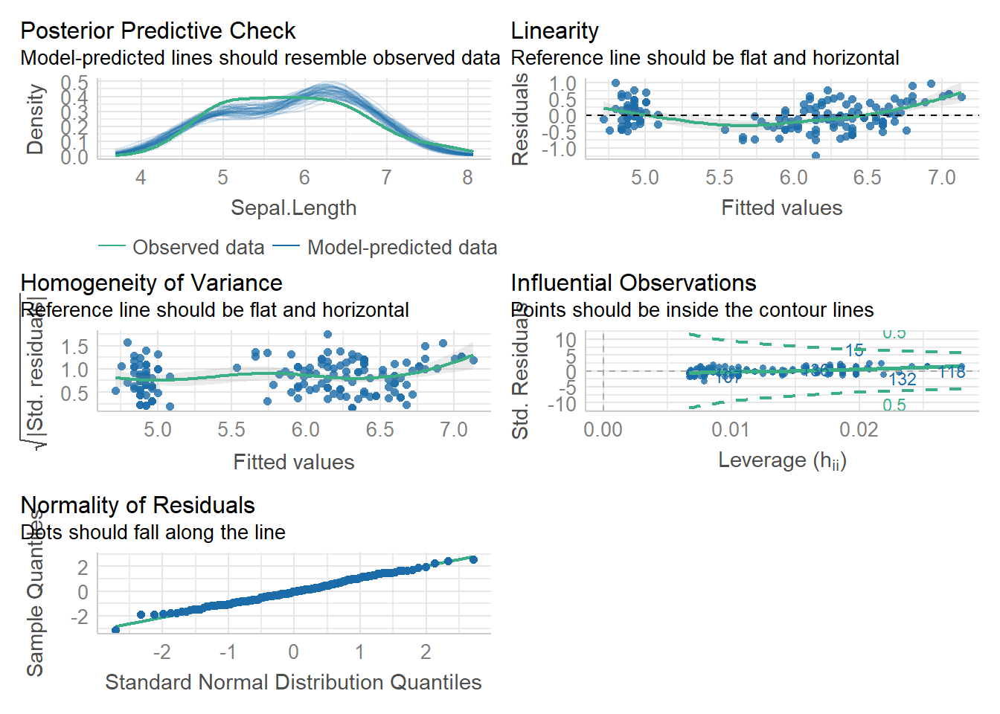
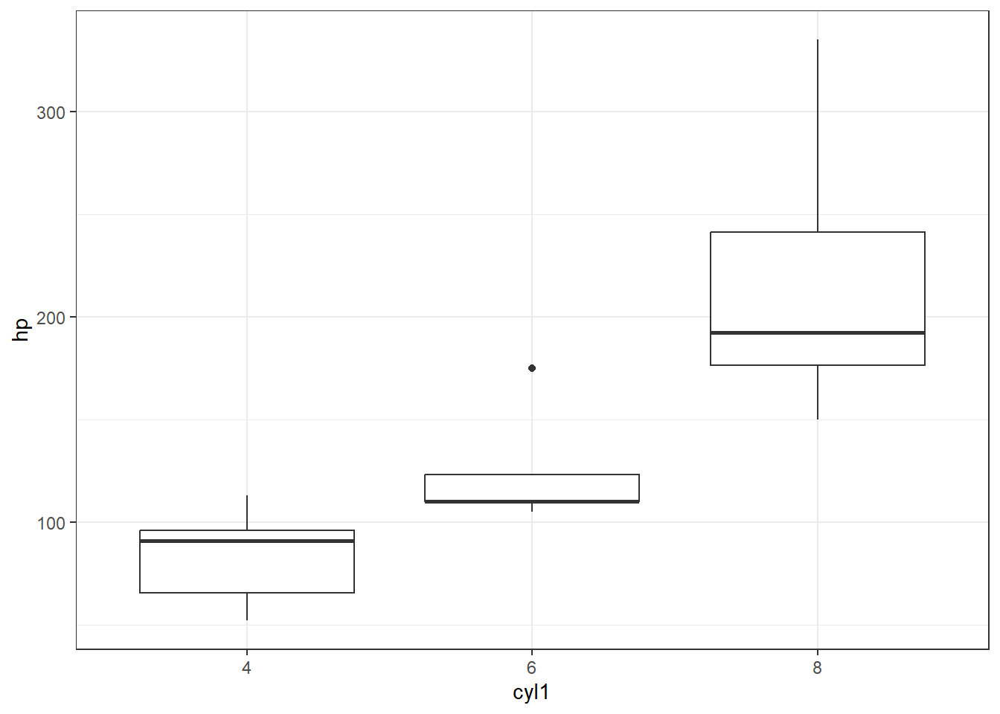
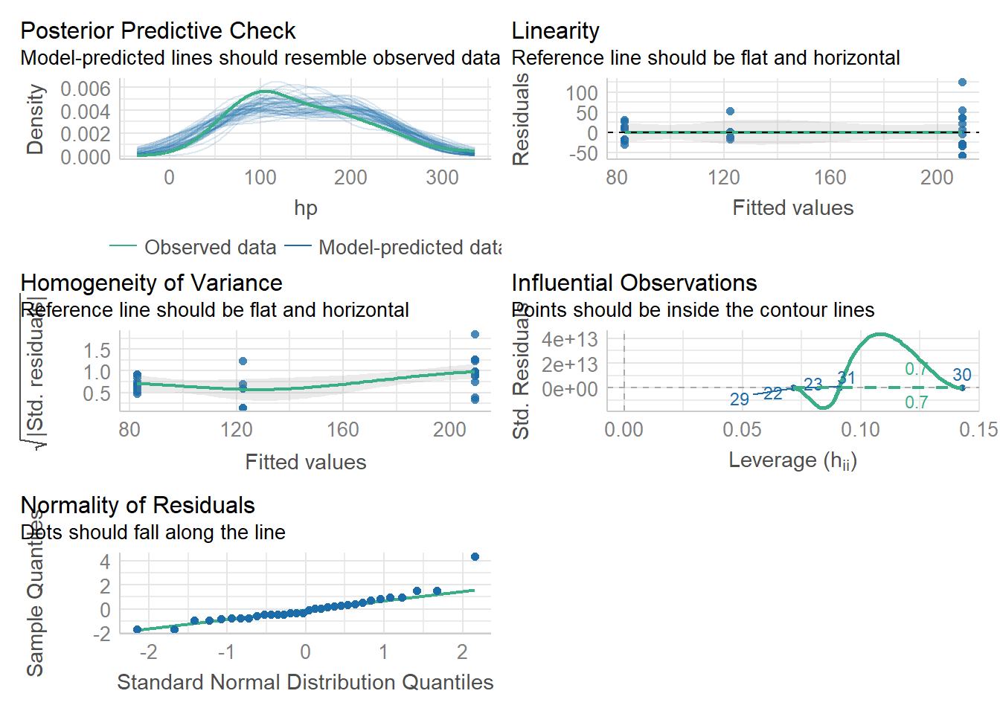

library(tidyverse)
library(see)
library(car)
library(patchwork)
library(ggsci)
library(ggridges)
library(performance)
library(Hmisc) #for correlation matrix
library(corrplot)#to visualize correlation matrices
library(car) #contains some statistical tests we need to assess assumptionslinear regression
Load packages
(Simple) Linear Regression
A linear regression essentially compares the correlation of one variable with another. The closer the relationship is to 1:1 (a diagonal line at 45 degrees from the x and y axis) the more correlated the two variables are. Does correlation imply causation? NO, it does not. But this type of analysis driven by hypotheses can help us seek causation/ mechanisms and statistically assess relationships.
Let’s take a look at a simple linear regression. To do this, we will use the lm() function in R. The syntax should always be reponsevariable ~ explanatoryvariable We will do this with the iris data.
lm1<-lm(Sepal.Length ~ Petal.Length, data=iris)
summary(lm1)
Call:
lm(formula = Sepal.Length ~ Petal.Length, data = iris)
Residuals:
Min 1Q Median 3Q Max
-1.24675 -0.29657 -0.01515 0.27676 1.00269
Coefficients:
Estimate Std. Error t value Pr(>|t|)
(Intercept) 4.30660 0.07839 54.94 <2e-16 ***
Petal.Length 0.40892 0.01889 21.65 <2e-16 ***
---
Signif. codes: 0 '***' 0.001 '**' 0.01 '*' 0.05 '.' 0.1 ' ' 1
Residual standard error: 0.4071 on 148 degrees of freedom
Multiple R-squared: 0.76, Adjusted R-squared: 0.7583
F-statistic: 468.6 on 1 and 148 DF, p-value: < 2.2e-16The above table produces estimates for the slope and intercept of the line.
At the bottom we see R2 values (multiple and adjusted. We usually use adjusted Rsquared). We also see an overall p-value for our linear regression model (H0= slope of our regression line = 0).
plotting a regression line
It is very easy to make a regression line in ggplot. We can plot our scatterplot as we normally would and then we add the regression line using the geom_smooth() argument.
ggplot(iris, aes(x=Petal.Length, y=Sepal.Length))+
geom_point()+
geom_smooth(method='lm')+
theme_classic()`geom_smooth()` using formula = 'y ~ x'
The blue line represents our regression line (y~x). The gray around the line is the SE. We can add SE=FALSE to our geom_smooth() to turn that off:
geom_smooth(method=‘lm’, SE=FALSE)
Assumptions
Linear regressions have 4 assumptions:
1.) Linearity of the data: We assume the relationship between predictor (x) and outcome/dependent variable (y) is approx. linear. At each value of X there is a population of possible Y-values whose mean lies on the regression line.
2.) Normality of residuals: The residual error are assumed to be normally distributed. In other words: at each value of X, the distribution of possible Y values is normal
3.) Homogeneity of residual variance (homoscedasticity): We assume residual variance is approx. constant. In other words: the variance of Y values is the same at all values of X
4.) Independence of residual error terms: At each value of X, the Y-measurements represent a random sample from the population of possible Y values.
We can also make a residual plot to check some of our assumptions. Residuals measure the scatter of points above or below the least-squares regression line. When we calculate the residuals for a linear regression and plot them, y=0 is the least squares line. Residuals essentially represent the distance between each point and the linear regression line we see in our regression graph.
residuals(lm1) 1 2 3 4 5 6
0.22090540 0.02090540 -0.13820238 -0.31998683 0.12090540 0.39822871
7 8 9 10 11 12
-0.27909460 0.08001317 -0.47909460 -0.01998683 0.48001317 -0.16087906
13 14 15 16 17 18
-0.07909460 -0.45641792 1.00268985 0.78001317 0.56179762 0.22090540
19 20 21 22 23 24
0.69822871 0.18001317 0.39822871 0.18001317 -0.11552569 0.09822871
25 26 27 28 29 30
-0.28355574 0.03912094 0.03912094 0.28001317 0.32090540 -0.26087906
31 32 33 34 35 36
-0.16087906 0.48001317 0.28001317 0.62090540 -0.01998683 0.20268985
37 38 39 40 41 42
0.66179762 0.02090540 -0.43820238 0.18001317 0.16179762 -0.33820238
43 44 45 46 47 48
-0.43820238 0.03912094 0.01644426 -0.07909460 0.13912094 -0.27909460
49 50 51 52 53 54
0.38001317 0.12090540 0.77146188 0.25324634 0.58967743 -0.44229252
55 56 57 58 59 60
0.31235411 -0.44675366 0.07146188 -0.75604693 0.41235411 -0.70140030
61 62 63 64 65 66
-0.73783139 -0.12407698 0.05770748 -0.12853812 -0.17872361 0.59413856
67 68 69 70 71 72
-0.54675366 -0.18318475 0.05324634 -0.30140030 -0.36943035 0.15770748
73 74 75 76 77 78
-0.01032257 -0.12853812 0.33503079 0.49413856 0.53056965 0.34878520
79 80 81 82 83 84
-0.14675366 -0.03783139 -0.36050807 -0.31961584 -0.10140030 -0.39210703
85 86 87 88 89 90
-0.74675366 -0.14675366 0.47146188 0.19413856 -0.38318475 -0.44229252
91 92 93 94 95 96
-0.60586144 -0.08764589 -0.14229252 -0.65604693 -0.42407698 -0.32407698
97 98 99 100 101 102
-0.32407698 0.13503079 -0.43337025 -0.28318475 -0.46013708 -0.59210703
103 104 105 106 107 108
0.38075515 -0.29656817 -0.17835262 0.59450955 -1.24675366 0.41718624
109 110 111 112 113 114
0.02164738 0.39897069 0.10789297 -0.07389149 0.24432406 -0.65121480
115 116 117 118 119 120
-0.59210703 -0.07389149 -0.05567594 0.65361733 0.57183287 -0.35121480
121 122 123 124 125 126
0.26253960 -0.71032257 0.65361733 -0.01032257 0.06253960 0.43986292
127 128 129 130 131 132
-0.06943035 -0.21032257 -0.19656817 0.52164738 0.59897069 0.97629401
133 134 135 136 137 138
-0.19656817 -0.09210703 -0.49656817 0.89897069 -0.29656817 -0.15567594
139 140 141 142 143 144
-0.26943035 0.38521629 0.10343183 0.50789297 -0.59210703 0.08075515
145 146 147 148 149 150
0.06253960 0.26700074 -0.05121480 0.06700074 -0.31478371 -0.49210703 ggplot(lm1, aes(x=.fitted, y=.resid))+
geom_point()+
geom_hline(yintercept=0, linetype='dashed')+
labs(x='Petal Legnth', y='Residuals')+
theme_classic()
If assumptions of normality and equal variance are met, a residual plot should have: - A roughly symmetric cloud of points above and below the horizontal line at 0 with a higher density of points close to the line ran away from it.
- Little noticeable curvature as we move from left to right
- Approx. equal variance of points above and below the line at all values of X
The residual plot above shows meets all assumptions, though this analysis is somewhat subjective.
An alternative assumption check I think it is easier to do a more comprehensive visual check with the performance package in R. We can easily visually check the first 3 assumptions using check_model(). Assumption 4 requires us to think about experimental design.
lm1<-lm(Sepal.Length ~ Petal.Length, data=iris)
check_model(lm1)Not enough model terms in the conditional part of the model to check for
multicollinearity.
Using the plots above, we can check 3 / 4 of our assumptions and look for influential observations/outliers. The plots even tell us what to look for on them! This is a bit simpler than trying to analyze the residual plot.
As with the residual plot, this analysis of assumptions is somewhat subjective. That is ok.
when data are not linear
Sometimes the relationship between two variables is not linear! There are many types of common relationships including logarithmic and exponential. We can often visualize these relationships and Transform our data to make them linear with some simple math.
Let’s look at an example:
head(Loblolly)Grouped Data: height ~ age | Seed
height age Seed
1 4.51 3 301
15 10.89 5 301
29 28.72 10 301
43 41.74 15 301
57 52.70 20 301
71 60.92 25 301p1<-ggplot(Loblolly, aes(x=age, y=height))+
geom_point()+
geom_smooth()+
geom_smooth(method='lm', linetype='dashed', color='firebrick')+
theme_classic()+
labs(title='original')
#this is roughly logarithmic in shape
lob<-Loblolly
lob$age2<-log(lob$age)
p2<-ggplot(lob, aes(x=age2, y=height))+
geom_point()+
geom_smooth()+
geom_smooth(method='lm', linetype='dashed', color='firebrick')+
theme_classic()+
labs(title='log transformed')
lob$age3=(lob$age2)^2
p3<-ggplot(lob, aes(x=age3, y=height))+
geom_point()+
geom_smooth()+
geom_smooth(method='lm', linetype='dashed', color='firebrick')+
theme_classic()+
labs(title='squared')
p1/p2/p3`geom_smooth()` using method = 'loess' and formula = 'y ~ x'
`geom_smooth()` using formula = 'y ~ x'
`geom_smooth()` using method = 'loess' and formula = 'y ~ x'
`geom_smooth()` using formula = 'y ~ x'
`geom_smooth()` using method = 'loess' and formula = 'y ~ x'
`geom_smooth()` using formula = 'y ~ x'
Here we can see that the transformation was fairly trivial (the data were close enough to a straight line already). BUT, technically, the first plot shows a logarithmic trend. We can transform one of the variables to generate a more linear trend. We can guess a transformation and check it with graphs or we can use our knowledge of mathematical relationships to understand how we might make our relationship more linear.
Linear Regression with categorical variables
We can look at mtcars this time…
head(mtcars) mpg cyl disp hp drat wt qsec vs am gear carb
Mazda RX4 21.0 6 160 110 3.90 2.620 16.46 0 1 4 4
Mazda RX4 Wag 21.0 6 160 110 3.90 2.875 17.02 0 1 4 4
Datsun 710 22.8 4 108 93 3.85 2.320 18.61 1 1 4 1
Hornet 4 Drive 21.4 6 258 110 3.08 3.215 19.44 1 0 3 1
Hornet Sportabout 18.7 8 360 175 3.15 3.440 17.02 0 0 3 2
Valiant 18.1 6 225 105 2.76 3.460 20.22 1 0 3 1Now, I want to hypothesize that there will be no effect of cylinder on horsepower (this is called a “null hypothesis”). We’ve seen similar hypothesis before in our ANOVA.
First, let’s make cylinder a factor and plot a boxplot so we can see whether there may be a trend here…
mtcars$cyl1=as.factor(mtcars$cyl)
ggplot(mtcars, aes(x=cyl1, y=hp))+
geom_boxplot()+
theme_bw()
I think it is safe to say we see what we might suspect to be a linear(ish) relationship between cyl and hp, where hp increases as cyl increases. What do you think?
Now, let’s do some stats on this.
Run the lm
lmhp<-lm(hp~cyl1, data = mtcars)
summary(lmhp)
Call:
lm(formula = hp ~ cyl1, data = mtcars)
Residuals:
Min 1Q Median 3Q Max
-59.21 -22.78 -8.25 15.97 125.79
Coefficients:
Estimate Std. Error t value Pr(>|t|)
(Intercept) 82.64 11.43 7.228 5.86e-08 ***
cyl16 39.65 18.33 2.163 0.0389 *
cyl18 126.58 15.28 8.285 3.92e-09 ***
---
Signif. codes: 0 '***' 0.001 '**' 0.01 '*' 0.05 '.' 0.1 ' ' 1
Residual standard error: 37.92 on 29 degrees of freedom
Multiple R-squared: 0.7139, Adjusted R-squared: 0.6941
F-statistic: 36.18 on 2 and 29 DF, p-value: 1.319e-08This time we used a categorical x variable, which makes things a little more interesting. In the coefficients table this time we see cyl = 6 and cyl =8 represented as well as “intercept.” R takes the categorical variables and places them in alpha numeric order in these tables. So “intercept” is actually cyl=4. The “estimate” tells us the effect size of each category relative to “intercept.” SO, the mean of cyl=4 should be 82.64 (check the boxplot above to confirm). The mean of cyl=6 is not 39.65, but is actually 39.65 higher than mean of cyl=4 (82.64 + 39.65 = 132.29, which checks out). The p-values associated with each of the coefficients test the null hypothesis that each coefficient has no effect. A p <0.05 indicates that the coefficient is likely to be meaningful in the model (changes in the predictor’s value are related to changes in the response value).
Further down, we see an R-squared of nearly 0.70, which is very good evidence of a linear relationship (70% of the variance in y can be explained by x!). The p-value is very nearly 0.00, which indicates a significant linear correlation.
Check assumptions!
check_model(lmhp)Not enough model terms in the conditional part of the model to check for
multicollinearity.
Here we see some concern about Homoscedasticity and homogeneity of variance. We can probably still assume our model is reliable, but we may want to be careful. We learned ways to numerically assess this last week, but again, with high enough sample size, this won’t be an issue. Here, I would suggest that n is too small, so if this were a real statistical test we would have limitations to discuss.
Remember our hypothesis (null) was: “There will be no effect of cylinder on horsepower.” We are able to reject this null hypothesis and suggest that indeed horsepower increases as cylinder increases. We might also add caveats that homoscedasticity was not confirmed due to low sample size, but the result seems clear enough that this likely doesn’t matter.
Introduction to R for Biology & Ecology - linear regression Introduction to R for Biology & Ecology - linear regression Introduction to R for Biology & Ecology - linear regression Introduction to R for Biology & Ecology